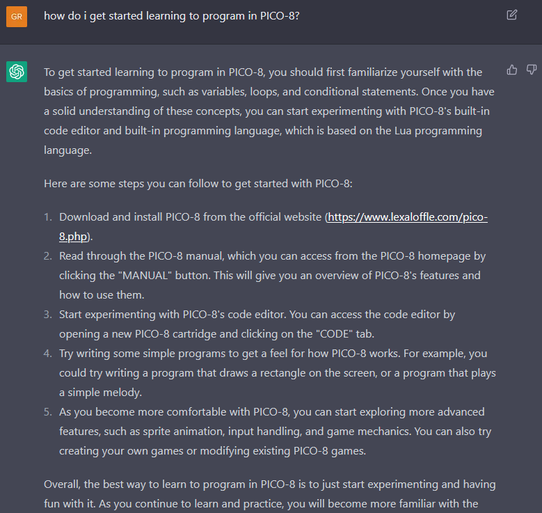
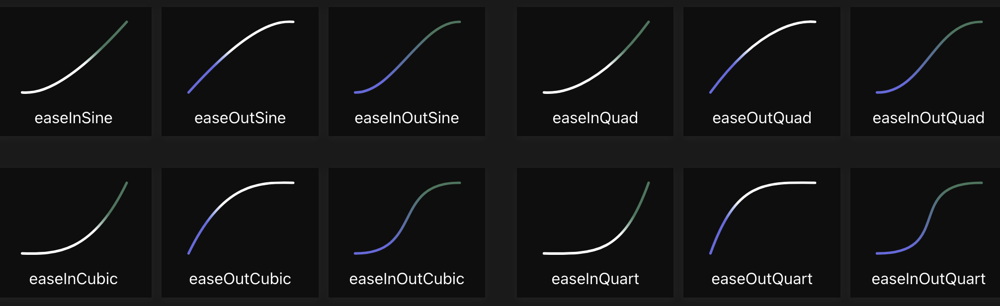

class: center, middle .title[Game Development 1] <br/><br/> .subtitle[Loops] <br/><br/><br/><br/><br/><br/> .date[Nov 2023] <br/><br/><br/> .note[Created with [Liminal](https://github.com/jonathanlilly/liminal) using [Remark.js](http://remarkjs.com/) + [Markdown](https://github.com/adam-p/markdown-here/wiki/Markdown-Cheatsheet) + [KaTeX](https://katex.org)] ??? Author: Grigore Burloiu, UNATC --- class: center ## the future of learning? (Dec '22) [](https://chat.openai.com/chat) --- name: toc class: left # ★ Table of Contents ★ <!-- omit in toc --> 1. [Loops](#loops) 2. [Linear interpolation (lerp)](#linear-interpolation-lerp) 3. [Assignment](#assignment) <!-- Comment out the next slide if you don't want the Table of Contents link --> --- layout: true .toc[[★](#toc)] --- <iframe width="100%" height="600" src="https://www.youtube.com/embed/t4CRCJUmWsM?start=42" title="YouTube video player" frameborder="0" allow="accelerometer; autoplay; clipboard-write; encrypted-media; gyroscope; picture-in-picture" allowfullscreen></iframe> --- name: loops # Loops `_update()` → one loop / frame -- what if we want *n* loops / frame? --- ## Architecture of a loop `while` -- `for` -- exercise - draw 15 stars (white dots) on a black background - [flowchart](01-02-gd-basics#10) before coding <img src="../attachments/p8-stars.png" width="50%"> --- ## Loops in code recap [conditionals](01-03-pico8#25) -- ```lua while ( cond ) do actions ... end ``` -- ```lua for i = from,to,increment do actions ... end ``` -- - the above syntax, annotated -- ```lua while ( cond ) do -- while cond is true actions ... -- do actions end for i = from,to,increment do -- standard form: -- for i=1,N actions; ... -- actions to be performed N times end ``` --- name: linear-interpolation-lerp # Linear interpolation (lerp) [intro to lerp](https://www.alanzucconi.com/2021/01/24/linear-interpolation/) (Alan Zucconi) -- no `lerp()` in pico-8... what to do? -- [google](https://www.reddit.com/r/pico8/comments/17j5f0s/lerp_function/), prototype -- [the right way to lerp in Unity](https://gamedevbeginner.com/the-right-way-to-lerp-in-unity-with-examples/) (John French) -- [](https://easings.net/) related - [easing functions](https://www.lexaloffle.com/bbs/?tid=40577&authuser=1) --- ## Lerping and looping .right-column[ [](https://easings.net/) - [easing functions](https://www.lexaloffle.com/bbs/?tid=40577&authuser=1) ] one iteration per frame = animation -- all iterations at once = `for` loop --- name: assignment # Assignment 1. a .p8 sketch where 1. pressing a button draws a vertical line in the center of the screen 2. pressing again clears the screen & draws 2 equally distanced lines 3. press again, 3 lines 4. 4 lines etc 2. same as above, but on the even numbers (2, 4, ...) draw horizontal lines -- <img src="../attachments/gd-loops-assgmt.png" width="80%"> -- 3. tutorial 5 in the [nerdy teachers platformer series](https://nerdyteachers.com/Explain/Platformer/). upload your game file(s)